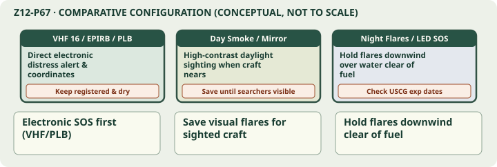

Z12-P67 · Extreme environments · New manuscript
Deploy marine distress signals (VHF-DSC, EPIRB/PLB, flares, mirror) legally and safely
Match electronic, visual and pyrotechnic marine distress signals to day/night conditions without causing burns or false alerts.
When it applies · Life-threatening maritime distress on large lakes, coastal bays and offshore waters.
Equipment · Marine VHF/DSC radio, registered 406 MHz EPIRB or PLB, USCG-approved day/night visual signals (flares/orange smoke/LED SOS light/mirror).

Actions
- Activate electronic distress FIRST when in grave danger: broadcast MAYDAY on VHF Channel 16 / trigger VHF-DSC distress AND activate a registered 406 MHz EPIRB or PLB upright to clear sky so rescue centers receive immediate coordinates.[X05, N05]
- Save visual signals (daylight orange smoke, signal mirror, dye marker; nighttime red flares or USCG-approved electronic LED distress light) for when a rescuing vessel or aircraft is actually in sight—do not burn through finite flares with an empty horizon.[X05, N09, ED]
- Handle pyrotechnic flares strictly per label downwind over water away from fuel tanks, fiberglass decks, eyes and faces—hot dripping slag causes severe burns and boat fires; check USCG expiration dates regularly.[X05, C02, T01]
Failure recognition · Firing all three handheld flares at dusk with no boats in sight, or holding a burning flare upwind where hot slag drips onto hands and fuel hoses.[X05, T01]
Verify · Confirm current NOAA beacon registration, unexpired USCG visual signals and downwind-over-water handling knowledge before launching.[N05, X05, ED]
Stop or change course · Firing marine distress signals or triggering EPIRB/PLB/MAYDAY in non-emergency situations is unlawful and endangers real rescues; cancel any accidental trigger immediately with the Coast Guard.[N05, X05]
Evidence and editorial notes
- C02 · USDA Forest Service / Smokey Bear · Smokey Bear’s Campfire Safety Guide (agency PDF)
- Section: Build your campfire; choose a location · Conditions: Where campfires are currently permitted
Support: Use an established fire ring where required or available. Protect the area from nearby combustible materials, avoid windy conditions and keep water ready.
Limitations: Site clearances vary by fuel load, slope, and wind; no universal safe radius fits all terrain. · Conflicting evidence: None; aligns with USFS-FIRE.
Editorial note: Grounds site-selection and ring-preparation procedures. · Specialist reviewer: Fire prevention and land management
Primary source · checked 2026-11-24 - N05 · NOAA SARSAT · Frequently Asked Questions (Current web edition)
- Section: Emergency beacon types and registration · Conditions: Emergency satellite distress signaling (406 MHz PLBs and EPIRBs)
Support: A 406 MHz distress beacon transmits into the Cospas-Sarsat system. Verify country code, registration and model capabilities separately.
Limitations: PLBs are one-way distress alerts only (no two-way texting), require clear sky view and must be reserved for grave and imminent danger. · Conflicting evidence: Distinguishes one-way 406 MHz PLBs from commercial two-way satellite messengers.
Editorial note: Anchors beacon selection, sky-view limits and registration cards in Z11. · Specialist reviewer: Search and rescue and emergency communications
Primary source · checked 2026-11-24 - N09 · NPS · Outdoor Emergency Plan (current web edition)
- Section: If You Get Lost; Seek help · Conditions: Lost hiker who cannot safely retrace steps and has sought rescue
Support: Report last known location and landmarks. Stay put while awaiting help unless an immediate threat requires getting to safety.
Limitations: Navigation, signaling method and safe movement depend on site and responder instructions. · Conflicting evidence: See A02 claim audit for boundaries.
Editorial note: Core evidence for lost-person psychology, signaling and SAR coordination cards. · Specialist reviewer: Search and rescue
Primary source · checked 2026-11-24 - T01 · American Red Cross · First Aid Steps (current web edition)
- Section: First Aid Steps > Check the scene; check the person · Conditions: Lay responder in United States; assess safety before contact
Support: Check scene safety, responsiveness, breathing and immediately life-threatening conditions.
Limitations: Lay guidance does not replace advanced clinical or rescue protocols. · Conflicting evidence: None; universal first-response opening gate.
Editorial note: Anchors scene-safety-first rule across Z01. · Specialist reviewer: EMS and wilderness medicine
Primary source · checked 2026-11-24 - X05 · US Coast Guard · Boating Safety Resource Center (current web edition)
- Section: Boating Safety > Float Plans, VHF-DSC, Weather and Abandon-Ship Limits · Conditions: Inland large lakes, coastal waters and maritime travel
Support: File a float plan, monitor marine weather and VHF Channel 16/DSC where equipped, stay with a swamped buoyant hull when safer than swimming to distant shore and maintain visual/electronic distress signals.
Limitations: Open-water craft operations require vessel-specific seamanship beyond general survival cards. · Conflicting evidence: None; aligns with NOAA-MARINE and NOAA-SARSAT.
Editorial note: Anchors maritime communication, hull-stay and distress cards in Z12. · Specialist reviewer: Maritime safety and USCG-aligned review
Primary source · checked 2026-11-24
Source lineage · USCG safety and NOAA SARSAT; new manuscript · Classification · New manuscript.